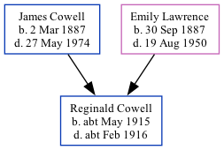

Reginald Albert Cowell cMay 1915 - c1916 [ Home ] | [ Calendar ] | [ Surnames Index ] | [ Family History ]The child of James Cowell (a seaman collier with the whitstable shipping company) and Emily Lawrence Reginald Cowell , the uncle of Nigel Horne , was born in Eastry, Kent, England c. May 19151,2,3 .
He died c. Feb 1916 in Eastry2,4,5 and was buried at Ss Peter & Paul, Sutton, Kent, England on Mar 31, 19165,6,7 .
Parents James Frederick was born on Mar 2, 1887Emily Jane was born on Sep 30, 1887Citations England & Wales births 1837-2006 - Findmypast England & Wales, Death Index: 1984-2005 Online publication - Provo, UT, USA: The Generations Network, Inc., 2007.Original data - General Register Office. England and Wales Civil Registration Indexes. London, England: General Register Office. © Crown copyright. Published by permission of the Cont England & Wales, FreeBMD Birth Index, 1837-1915 Online publication - Provo, UT, USA: The Generations Network, Inc., 2006.Original data - General Register Office. England and Wales Civil Registration Indexes. London, England: General Register Office. © Crown copyright. Published by permission of the Cont England & Wales deaths 1837-2007 - Findmypast England, Select Deaths and Burials, 1538-1991 Ancestry.com Operations, Inc. Kent, Canterbury Archdeaconry Burials - Findmypast England Deaths & Burials 1538-1991 - Findmypast Media England & Wales births 1837-2006 - BMD/B/1915/2/AZ/000314/042 England & Wales deaths 1837-2007 - BMD/D/1916/1/AZ/000217/112 Canterbury Burials - GBPRS/CANT/D/95322622 England Deaths & Burials 1538-1991 - R_276815553 Family Tree Map
Generated by ged2site . Last updated on Feb 28, 2025